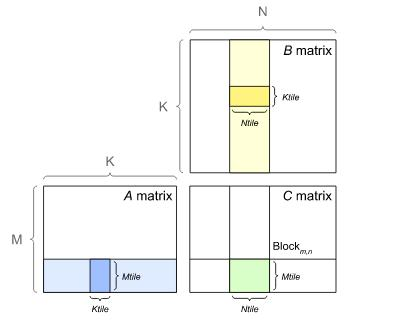
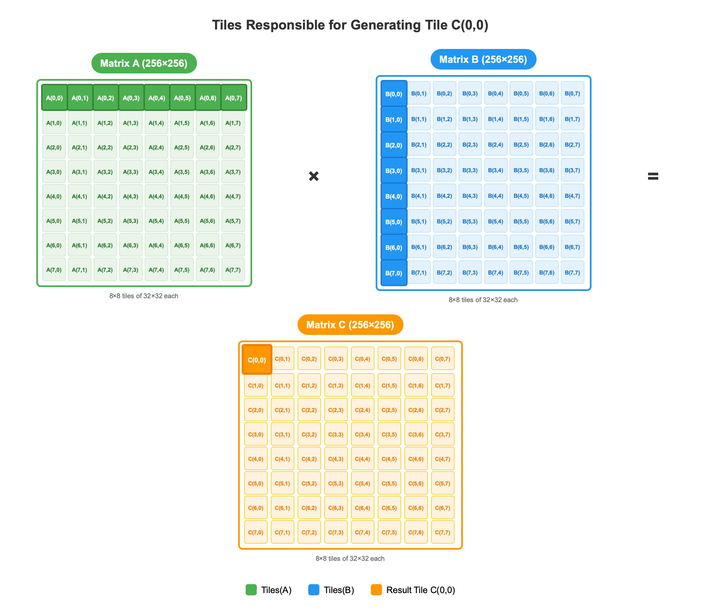
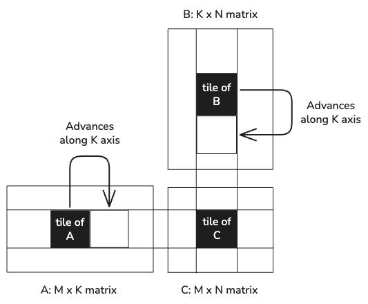
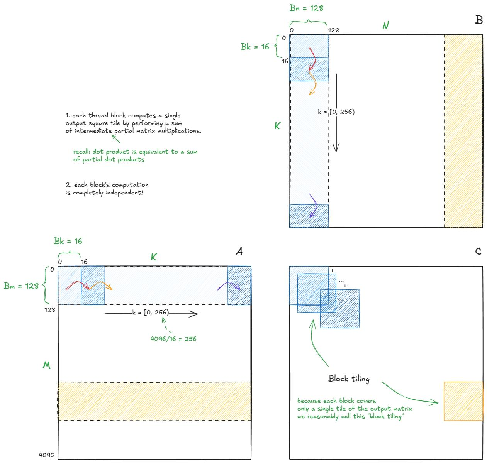
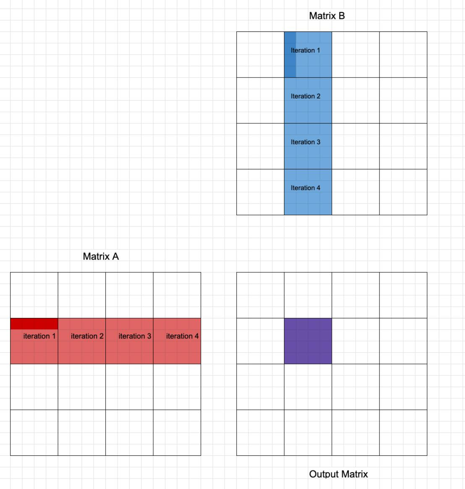

第四章：算子技能——把 Tier 1~5 落到具体 kernel 上¶
学习目标：面对一个具体算子时，先判断瓶颈类型，再决定该调用哪些 tier 的方法，而不是一上来就乱调参数。
本章技能卡¶
| 项目 | 内容 |
|---|---|
| 关注对象 | GEMM / Flash-Attention / Softmax / RMSNorm / Cross-Entropy / RoPE / MoE / FFN |
| 核心问题 | 看见一个算子时，如何先判瓶颈，再选方法 |
| 最适合阅读时机 | 你已经理解前 3 章，希望把方法落到具体工作负载上 |
| 读完应能回答 | 为什么有的算子先看 Tensor Core，有的先看 HBM 往返，有的先看调度 |
| 最重要产出 | 形成“Problem setup → Bottleneck → Skeleton → Pitfalls → Platform notes”的统一分析模板 |
配套导航：这章最适合和前 3 章配合阅读；如果需要总学习地图，请看 学习路径-总目录。
配套资料： - 最小可运行模板集：模板 4（Softmax Kernel） - 术语表与通用坑清单
1. 先按瓶颈给算子分类¶
对学习和实战都最有帮助的第一步，不是按“算子名字”分类，而是按 瓶颈类型 分类。
| 类别 | 代表算子 | 最常见优化重点 |
|---|---|---|
| Compute-bound | GEMM、大部分 dense attention 主体、部分 MoE expert GEMM | Tensor Core / MFMA、内层循环、tile 形状 |
| Memory-bound | Softmax、RMSNorm、RoPE、很多小 FFN 推理场景 | fusion、向量化加载、reduce 路径、locality |
| Mixed / 切换型 | Flash-Attention、MoE、小 batch GEMM | 既看算术也看 I/O，还要看并行结构 |
你应该养成的反射是：
2. GEMM：几乎所有深度学习优化的母题¶
2.1 为什么 GEMM 是母题¶
很多模型计算最后都会落到类似结构：
- Linear：
X @ W^T - Attention：
Q @ K^T、P @ V - FFN：
X @ W1、hidden @ W2 - MoE expert：本质上也是一批 GEMM
所以学 GEMM 不是为了只会 GEMM，而是为了学会：
- 如何切 tile；
- 如何安排 K 循环；
- 如何让矩阵指令吃满；
- 如何处理边界与布局。
2.2 整张矩阵怎么被切块¶
如果你只记一句话，那就是：
GEMM 不是“一个 block 算完整张矩阵”，而是“很多 program/block 各自负责一个输出 tile，再沿 K 维分段累加”。
设：
A的 shape =[M, K]B的 shape =[K, N]C的 shape =[M, N]
例如：
M = 8N = 8K = 8BLOCK_M = 4BLOCK_N = 4
那么输出矩阵 C 可以被切成 4 个 4x4 的 tile：
C =
+--------+--------+
| Tile00 | Tile01 |
| 4x4 | 4x4 |
+--------+--------+
| Tile10 | Tile11 |
| 4x4 | 4x4 |
+--------+--------+
也就是说：
- 一个 program/block 只负责一个
C_tile； - 不同 program/block 写回
C的不同区域； - 它们的输出通常互不重叠，因此最后不需要彼此相加。
把下面这些图和这段话对照着看，最容易形成“整张矩阵被切开”的画面感：






在 Triton 里，这个映射通常对应：
pid_m = tl.program_id(axis=0)
pid_n = tl.program_id(axis=1)
offs_m = pid_m * BLOCK_M + tl.arange(0, BLOCK_M)
offs_n = pid_n * BLOCK_N + tl.arange(0, BLOCK_N)
直觉上：
pid_m选中“这是第几块行 tile”；pid_n选中“这是第几块列 tile”；offs_m / offs_n决定当前 program 最终要写回C的哪一块。
2.3 一个 tile 怎么沿 K 维算出来¶
现在只看左上角这个输出块：
它来自：
关键点在于：
C_tile的空间范围由BLOCK_M/BLOCK_N决定，但它的数值内容要靠沿 K 维一段一段地累加出来。
如果设：
BLOCK_K = 2
那就不会一次性把完整的 K=8 全读进来，而是分 4 次做 partial GEMM：
也可以写成更直观的分解：
C_tile
=
A[:, 0:2] @ B[0:2, :]
+
A[:, 2:4] @ B[2:4, :]
+
A[:, 4:6] @ B[4:6, :]
+
A[:, 6:8] @ B[6:8, :]
下面这些图适合配合这段 for k in range(...) 一起看：





2.4 一个具体数字例子：[4x8] @ [8x4] -> [4x4]¶
假设当前这个 block/program 只负责：
于是它最终要写出的结果是：
如果：
A是[4, 8]B是[8, 4]C_tile是[4, 4]BLOCK_K = 2
那么循环每次都会拿到：
第一次：
第二次：
第三次和第四次同理。最终：
这里有两个非常值得死记住的事实：
acc的 shape 始终是[BLOCK_M, BLOCK_N]；- 循环里变化的是 K 维窗口，而不是输出 tile 的空间位置。
2.5 为什么几乎所有高性能 GEMM 都必须这么做¶
这不是“某个框架喜欢的写法”，而是硬件资源决定的。
如果：
那么单张矩阵已经非常大，不可能：
- 让一个 SM / CU 一次吃完整张矩阵；
- 让一个 block/program 一次把完整 A/B 全装到片上；
- 不分块就直接完成整个 GEMM。
所以真正可行的方式只能是：
- 把输出
C切成很多个小 tile； - 每个 tile 再沿 K 维切成很多小 chunk；
- 每次只搬一小块 A/B 到寄存器或片上缓存；
- 做局部乘加；
- 把结果累加到
acc； - 最后再把
acc写回C。
这就是 blocking / tiling 的本质。
所以你以后看到任何高性能 GEMM，不管它写成 CUDA、Triton、CUTLASS 风格，还是 AMD 风格，本质上都在做这几件事：
- 空间上切输出 tile；
- 时间上分 K 维 chunk；
- 尽量把数据复用留在片上，而不是每次都回 HBM。
2.6 从数学公式到 Triton 变量的一一对应¶
从数学上看：
本质就是：
对 K 维做 reduction。
tile GEMM 并没有改变这个本质，只是把它变成：
- 一次并行算很多个
(i, j)； - 同时把 K 维 reduction chunk 化，逐段累计到
acc。
可以把数学对象和 Triton 变量这样对照：
| 数学对象 | Triton 里通常对应什么 | 作用 |
|---|---|---|
一个输出 tile C_tile |
acc |
保存当前 program 的局部结果 |
A[:, k:k+BLOCK_K] |
a |
当前 K 分块的 A 子块 |
B[k:k+BLOCK_K, :] |
b |
当前 K 分块的 B 子块 |
Σ_k |
for k0 in range(0, K, BLOCK_K) |
沿 K 维逐段累加 |
写回 C_tile |
tl.store(c_ptrs, ...) |
把局部结果落回全局内存 |
这也是为什么很多人会说：
因为它同时具备两件事：
- 空间上的 tiling；
- K 维上的 reduction blocking。
2.7 把一个 Triton GEMM 循环完整走读一遍¶
前面你已经知道了：
pid_m / pid_n决定输出 tile 的位置；for k0 in range(0, K, BLOCK_K)决定 K 维是分段推进的；acc是固定 shape 的局部累加器。
但很多人第一次真正读 Triton GEMM 时，还是会卡在一个地方：
我知道这些变量名，可是一进入
a_ptrs / b_ptrs / tl.load / tl.dot / tl.store这一串，就不知道代码到底在“执行什么动作”。
下面这张图就是为了解决这个问题：

你可以把一次 k0 迭代机械地拆成 5 步：
- 先固定输出 tile：由
pid_m / pid_n算出offs_m / offs_n； - 再固定当前 K 小窗口：由
k0和offs_k给出当前读取区间； - 生成 A/B 子块地址：得到
a_ptrs / b_ptrs； - 从全局内存 load 成二维子块：得到
a和b； - 做一次
tl.dot(a, b)：把这一段 K 窗口的贡献累计进acc。
最关键的阅读姿势是：
如果你一上来就盯 a_ptrs 的公式，很容易迷路；但如果先知道“我正在算哪个 C_tile”，后面的地址表达就会清楚很多。
2.8 从 offs 到 ptrs：地址表达到底在映射什么¶
真正让初学者困惑的，通常不是 tl.dot，而是：
a_ptrs = A + offs_m[:, None] * stride_am + (k0 + offs_k[None, :]) * stride_ak
b_ptrs = B + (k0 + offs_k[:, None]) * stride_bk + offs_n[None, :] * stride_bn
下面这张图可以把这两句翻译回二维坐标：

你要强迫自己总是从“二维坐标”理解，而不是从“线性地址公式”死背：
- A 的逻辑坐标是
(m, k)，所以地址表达必须对应m * stride_am + k * stride_ak； - B 的逻辑坐标是
(k, n)，所以地址表达必须对应k * stride_bk + n * stride_bn； - C 的逻辑坐标是
(m, n)，所以地址表达必须对应m * stride_cm + n * stride_cn。
更实用地说，当你在 code review 一个 GEMM kernel 时，最好的检查方法不是“看起来像不像模板”，而是逐项问：
- 这块 A 子矩阵的两维是不是
(m, k)？ - 这块 B 子矩阵的两维是不是
(k, n)？ - 这块 C 输出的两维是不是
(m, n)？
只要这 3 个问题答错一个，后面再高深的优化都没有意义。
补充：kernel 地址表达和 host 侧 launch 参数怎么一一对上¶
如果你已经看懂了 a_ptrs / b_ptrs / c_ptrs 的二维含义，下一步最该补上的就是：host 侧到底把什么传进来，才能让这些地址表达成立。
可以先看这张对照表：
| kernel 里的量 | host 侧通常怎么给 | 它真正表示什么 |
|---|---|---|
M, N, K |
A.shape[0], B.shape[1], A.shape[1] |
GEMM 问题尺寸 |
stride_am |
A.stride(0) |
A 上行索引 m 增 1 时跨过多少元素 |
stride_ak |
A.stride(1) |
A 上列索引 k 增 1 时跨过多少元素 |
stride_bk |
B.stride(0) |
B 上行索引 k 增 1 时跨过多少元素 |
stride_bn |
B.stride(1) |
B 上列索引 n 增 1 时跨过多少元素 |
stride_cm |
C.stride(0) |
C 上行索引 m 增 1 时跨过多少元素 |
stride_cn |
C.stride(1) |
C 上列索引 n 增 1 时跨过多少元素 |
把它翻译回 kernel 视角，就是：
a_ptrs 需要 host 告诉我 A 的 (m, k) 两个方向各走多远
b_ptrs 需要 host 告诉我 B 的 (k, n) 两个方向各走多远
c_ptrs 需要 host 告诉我 C 的 (m, n) 两个方向各走多远
于是 host 侧 launch 往往会长成这样：
def launch_gemm_skeleton(A: torch.Tensor, B: torch.Tensor):
assert A.is_cuda and B.is_cuda
assert A.ndim == 2 and B.ndim == 2
assert A.shape[1] == B.shape[0]
M, K = A.shape
_, N = B.shape
C = torch.empty((M, N), device=A.device, dtype=torch.float16)
grid = lambda meta: (
triton.cdiv(M, meta["BLOCK_M"]),
triton.cdiv(N, meta["BLOCK_N"]),
)
gemm_skeleton[grid](
A, B, C,
M, N, K,
A.stride(0), A.stride(1),
B.stride(0), B.stride(1),
C.stride(0), C.stride(1),
BLOCK_M=128,
BLOCK_N=128,
BLOCK_K=32,
)
return C
最容易帮你建立直觉的一点是：这些 stride 不是你手写猜出来的，而是直接从 tensor 本身的布局里读出来的。
例如连续布局下：
A = torch.randn(M, K, device="cuda")
B = torch.randn(K, N, device="cuda")
print(A.stride()) # 常见是 (K, 1)
print(B.stride()) # 常见是 (N, 1)
这时：
A[m, k]的元素偏移就是m * A.stride(0) + k * A.stride(1)；B[k, n]的元素偏移就是k * B.stride(0) + n * B.stride(1)；C[m, n]的元素偏移就是m * C.stride(0) + n * C.stride(1)。
所以你在读 kernel 时，完全可以把：
机械地翻译成：
这也是为什么第一章已经强调过：PyTorch 的 stride() 单位是元素，不是字节；而这里的 Triton 指针偏移也是按元素步长组织的。 这一点一旦想通，host 与 kernel 两边就能自然接上。
2.9 GEMM 的正确最小骨架¶
下面保留一个“地址正确、边界正确、累加正确”的最小骨架：
@triton.jit
def gemm_skeleton(
A, B, C,
M, N, K,
stride_am, stride_ak,
stride_bk, stride_bn,
stride_cm, stride_cn,
BLOCK_M: tl.constexpr, BLOCK_N: tl.constexpr, BLOCK_K: tl.constexpr,
):
pid_m = tl.program_id(axis=0)
pid_n = tl.program_id(axis=1)
offs_m = pid_m * BLOCK_M + tl.arange(0, BLOCK_M)
offs_n = pid_n * BLOCK_N + tl.arange(0, BLOCK_N)
offs_k = tl.arange(0, BLOCK_K)
acc = tl.zeros((BLOCK_M, BLOCK_N), dtype=tl.float32)
for k0 in range(0, K, BLOCK_K):
a_ptrs = A + offs_m[:, None] * stride_am + (k0 + offs_k[None, :]) * stride_ak
b_ptrs = B + (k0 + offs_k[:, None]) * stride_bk + offs_n[None, :] * stride_bn
a = tl.load(a_ptrs,
mask=(offs_m[:, None] < M) & ((k0 + offs_k[None, :]) < K),
other=0.0)
b = tl.load(b_ptrs,
mask=((k0 + offs_k[:, None]) < K) & (offs_n[None, :] < N),
other=0.0)
acc += tl.dot(a, b)
c = acc.to(tl.float16)
c_ptrs = C + offs_m[:, None] * stride_cm + offs_n[None, :] * stride_cn
tl.store(c_ptrs, c, mask=(offs_m[:, None] < M) & (offs_n[None, :] < N))
这里最值得记住的三条规则：
- A/B 的 stride 方向不能写反；
- K 边界必须 mask；
- 累加器默认优先 FP32。
2.10 GEMM 的常见优化抓手¶
| 抓手 | 来自哪层 | 作用 |
|---|---|---|
BLOCK_M/BLOCK_N/BLOCK_K |
Tier 1 | 控制 tile 形状与复用 |
num_warps/num_stages |
Tier 1/2 | 控制并行度与流水 |
| L2 grouping | Tier 2 | 改善相邻 tile 的 locality |
| Inner-loop hygiene | Tier 3 | 减少 K 循环冗余 |
| Split-K / Stream-K | Tier 4 | 解决 grid 太小或尾波 |
| Tensor Core / MFMA 友好形状 | Tier 5 | 适配硬件矩阵路径 |
2.11 GEMM 常见坑¶
- 把 stride 写反：最致命，也最隐蔽。
- 累加器用 FP16：短 K 可能还看不出来，长 K 很容易精度崩。
- 只调
num_warps，不看 tile：通常是在调假问题。 - 把 NVIDIA 上的 K 分块原样搬到 AMD：不一定匹配 MFMA 友好路径。
3. Flash-Attention：不是“更快的 attention”，而是“换了算法组织方式”¶
3.1 标准 attention 为什么会炸内存¶
标准写法会显式构造：
问题在于 scores 是 [N, N] 级别的中间矩阵。序列一长，中间结果就会非常大。
3.2 Flash-Attention 的核心不是“又 fusion 了一点”，而是：¶
根本不把完整的
scores/P写到 HBM。
它通过 tiled 方式逐块处理 K/V，同时维护在线 softmax 状态：
m_i：当前块之前的 running max；l_i：当前块之前的 running exp-sum；acc：当前累计的输出分子部分。
3.3 先从结构图看：Flash-Attention 在循环里到底做了什么¶
如果只用文字描述，很多人会觉得 Flash-Attention 很“玄”。其实先别碰公式，只看结构，就已经能理解 70%：

这张图里最重要的不是箭头本身，而是下面这三个结论：
- 外层固定一个
Q_tile； - 内层不断扫描不同的
K_tile / V_tile； - 每读一个新块，就立刻把它的贡献吸收到
m_i / l_i / acc中，而不是把整张scores或P存下来。
所以你可以把 Flash-Attention 理解成：
这也是它为什么能显著降低 HBM 往返的根本原因。
3.4 Online softmax 的核心更新式¶
处理新块时，关键不是简单 sum(exp(...))，而是要考虑 max 更新带来的重标定：
m_new = max(m_old, max(qk_block))
alpha = exp(m_old - m_new)
l_new = alpha * l_old + sum(exp(qk_block - m_new))
acc_new = alpha * acc_old + exp(qk_block - m_new) @ V_block
最容易错的是：
只更新了
l_i，却忘了同步缩放acc。
3.5 图解：为什么 acc 和 l_i 都要乘 alpha¶
下面这张图专门解释“在线 softmax 为什么不是只改分母那么简单”：

你可以把它理解成一次“坐标系更新”：
- 老状态
m_old / l_old / acc_old是按旧最大值归一化的； - 当新块出现更大的值时，新的参考最大值变成
m_new； - 于是旧状态必须整体乘上
alpha = exp(m_old - m_new)，才能和新块落在同一个归一化基准上。
这也是 Flash-Attention 最容易写错、但又必须写对的一步。
只记一句话也行：
3.6 这里更适合给“结构伪代码”，而不是假装给可复制模板¶
for each Q tile:
load Q_tile
init m_i, l_i, acc
for each K/V tile:
qk = Q_tile @ K_tile^T
apply causal mask if needed
update m_i, l_i, acc with online softmax
out = acc / l_i
Flash-Attention 的真正难点在于：
- tile 形状与 SRAM/SMEM 压力；
- mask 处理；
- 数值稳定性；
- 平台上的矩阵路径和 layout 限制。
所以这类教程里最负责任的写法，是明确告诉读者：
3.7 把结构图和变量再对齐一次¶
如果你准备开始读一个真实的 Flash-Attention kernel，最好先把下面这张“变量翻译表”背熟：
| 你脑子里的对象 | 代码里常见变量 | 作用 |
|---|---|---|
| 当前查询块 | Q_tile / q |
固定外层循环的查询片段 |
| 当前键块 | K_tile / k |
当前内层循环读取的键片段 |
| 当前值块 | V_tile / v |
当前内层循环读取的值片段 |
| 当前分数块 | qk_block |
只在当前 tile 范围内存在 |
| running max | m_i |
保证数值稳定 |
| running exp-sum | l_i |
最终 softmax 分母 |
| running output numerator | acc |
输出分子累计项 |
把这些对象和上面的两张图对起来看，你会发现 Flash-Attention 其实就是：
3.8 Flash-Attention 常见坑¶
- 忘记对
acc做alpha缩放； - causal mask 方向写反；
head_dim相关 shape 不是编译期常量时，生成的代码质量变差；- 把它当纯 compute-bound 看，忽视 SRAM/SMEM 压力。
4. Softmax：典型 memory-bound 教材题¶
4.1 Softmax 为什么几乎总是 memory-bound¶
Softmax 每个元素的算术并不重，但需要：
- 读输入；
- 做 max/reduce；
- 做 exp/sum；
- 再写输出。
它的关键不在于“计算太难”，而在于：
如果整行不能高效装入并完成 reduce，你就会在反复搬数据。
4.2 Safe softmax 是第一原则，不是可选增强¶
稳定写法：
原因很简单：
- 不减
max，大 logits 很容易让exp溢出； - 尤其低精度下更危险。
4.3 图解：一行 softmax 到底经历了什么¶
如果你第一次写 softmax kernel，很容易把它想成“只是套一下公式”。
但真正的实现心智模型应该是：
下面这张图就是把这条路径展开后的版本：

这张图最值得你记住的不是公式，而是 3 个实现直觉：
- softmax 的自然处理单位通常是一整行；
- 稳定性来自“先减 max”，不是某个可选优化；
- 如果一行不能在合理代价下装入并完成 reduce，问题就会退化成 chunked / multi-pass softmax。
这也是为什么 softmax 常常被当成 memory-bound 教材题：
- 算术并不复杂；
- 关键是把整条 reduce 路径组织好；
- 避免中间结果多次往返全局内存。
4.4 最小骨架¶
@triton.jit
def softmax_skeleton(out_ptr, x_ptr, n_cols, stride_row, BLOCK_SIZE: tl.constexpr):
row = tl.program_id(0)
cols = tl.arange(0, BLOCK_SIZE)
mask = cols < n_cols
x = tl.load(x_ptr + row * stride_row + cols, mask=mask, other=float('-inf')).to(tl.float32)
x = x - tl.max(x, axis=0)
num = tl.exp(x)
den = tl.sum(num, axis=0)
y = num / den
tl.store(out_ptr + row * stride_row + cols, y, mask=mask)
4.5 把图和骨架对齐一次¶
把图和上面的骨架逐句对起来，你就会发现：
row = tl.program_id(0)：选当前处理的是哪一行；cols = tl.arange(0, BLOCK_SIZE)：给出这一行上的列坐标；x = tl.load(...)：把这一行的数据搬进当前 program；tl.max(x, axis=0)：做“整行最大值”归约；tl.sum(num, axis=0)：做“整行分母”归约；tl.store(...)：把归一化后的整行写回。
如果你现在还只能“背公式”，但不能把公式一一映射到 kernel 的每一步动作上，那就说明 softmax 的实现心智模型还没真正建起来。
4.6 Softmax 常见坑¶
- 忘记减 max；
- reduce 用低精度；
BLOCK_SIZE < n_cols却还想一次做完整 softmax；- 小列数场景不考虑 multi-row 处理。
5. RMSNorm：减少流量比增加算力更重要¶
5.1 RMSNorm 和 LayerNorm 的差别¶
RMSNorm 只需要：
而 LayerNorm 需要：
所以 RMSNorm 结构更轻，也更适合作为 fused kernel 的练手对象。
5.2 RMSNorm 最有价值的三条规则¶
- 平方和归约用 FP32；
- 优先
rsqrt，而不是sqrt + divide； - 尽量把整行的归一化与缩放融合在一个 kernel 中完成。
5.3 图解：为什么 RMSNorm 是很好的 fused kernel 练手对象¶
RMSNorm 的教学价值很高，因为它保留了“整行 reduce + 归一化 + 缩放”的核心结构，但又比 LayerNorm 更轻。
下面这张图把一条典型的 fused RMSNorm 路径拆开了：

从这张图里你最好记住两件事：
- RMSNorm 只有一个核心 reduce：
mean(x^2)； - 它真正值钱的地方，不是某个单独公式，而是把“读 x → reduce → 归一化 → 乘 weight → 写回”放在一个 kernel 里。
也正因为它的结构相对干净，所以非常适合练：
- fp32 reduce 路径怎么写；
rsqrt怎么接进归一化公式；- 为什么 fusion 本质上是在省中间结果 HBM 往返。
5.4 把 RMSNorm 规则和最小模板对齐¶
如果你回头对照模板脚本或本章里的最小实现骨架，会发现 RMSNorm 的检查点特别清楚：
x*x有没有先进入更安全的精度路径；mean_sq是否真的是“平方和 / hidden_dim”；inv_rms是否用rsqrt(mean_sq + eps)得到；weight的乘法是否还和归一化处在同一个 kernel 里。
这也是 RMSNorm 很适合作为“从 elementwise 迈向 reduce + fusion”过渡练习题的原因。
5.5 RMSNorm 常见坑¶
x*x仍然留在低精度里做；- 把它拆成太多 eager 小步，导致中间结果往返；
- 对大 hidden dim 忘记边界 mask。
6. Cross-Entropy：关键洞察是“不必显式写出完整 softmax”¶
6.1 为什么 fused Cross-Entropy 值得做¶
如果最终只需要：
那其实没必要先把完整 [batch, vocab] 的 softmax 概率矩阵写出来。
更直接的思路是：
这样你只需要：
- 找到
target位置的值； - 计算整行
logsumexp； - 写出一个标量 loss。
6.2 大 vocabulary 场景的真正问题¶
对大 vocab，真正难点往往不是“target 索引会溢出”，而是：
- 一行太长，不能一次装下；
- 需要 chunked 方式维护 running max / running sum；
- 需要在 chunk 中定位 target 所在位置。
所以正确关注点应是 chunked logsumexp 设计，而不是伪造一个并不存在的 int32 溢出问题。
6.3 图解：大 vocab 时真正发生的是 chunked logsumexp¶
很多人一看到 Cross-Entropy，就会在脑子里自动展开成：
但如果 vocab 很大，这种想法在实现上往往既浪费流量，也不方便做 chunking。
更符合 kernel 视角的心智模型是下面这张图：

你可以把它理解成一行 logits 的分块扫描：
- 每次只读一个 chunk；
- 一边维护 running
max和 runningsum； - 如果 target 落在当前 chunk，就顺手取出
target_logit； - 最后再用：
这张图最想帮你建立的直觉是：
- 大 vocab 的关键问题是 chunked reduce；
- 不是“target 索引会不会溢出”这种伪问题；
- 也不是“必须先物化完整 softmax 概率矩阵”。
6.4 把公式和 chunked 流程对齐¶
如果你从数值稳定角度看，这个过程其实就是把 logsumexp 做成 running reduce：
m_new = max(m_old, max(chunk))
s_new = exp(m_old - m_new) * s_old + sum(exp(chunk - m_new))
logsumexp = m_final + log(s_final)
它和 Flash-Attention 在线 softmax 的共同点很强：
- 都在维护 running
max； - 都在维护按当前最大值重标定后的累计量；
- 都在避免一次性物化过大的中间结果。
6.5 常见坑¶
- 先显式写出完整 softmax，再取 target；
- 没有做
logsumexp稳定化； - 大 vocab 时不做 chunking。
7. RoPE：最容易写对数学、却写错 layout¶
7.1 RoPE 的本质¶
RoPE 是把隐藏维中的一对元素看成二维向量，对其做旋转：
7.2 真正重要的是“pair 怎么定义”¶
RoPE 常见有两类 layout：
- interleaved：相邻两位成对，例如
(x0, x1), (x2, x3)； - split-half / rotate-half：前半与后半成对，例如
(x0, x_{d/2})。
教学里最该强调的是：
必须和模型训练时使用的 layout 一致。
不要把某个 layout 草率写成“所有 LLaMA 默认”或“通用默认”。更稳妥的说法是：
7.3 图解：interleaved 和 split-half 到底差在哪¶
RoPE 非常适合拿来提醒读者一件事：
数学公式写对，不代表实现就对；pairing layout 一旦错，整个结果都会系统性偏掉。
下面这张图把两种最常见 layout 并排摆出来：

它最想说明的是：
- 在 interleaved 里，相邻两位成对；
- 在 split-half / rotate-half 里，前半和后半成对；
- 同一条旋转公式，放在不同 pairing 规则上，处理的元素对完全不同。
所以读 RoPE 代码时，第一件事不该是问“cos/sin 怎么乘”，而应该先问：
7.4 把 layout 检查变成一个可执行动作¶
最稳妥的工程方法不是猜模型默认 layout，而是：
- 先找参考实现；
- 用同一输入逐元素对齐；
- 确认 pair 定义、cos/sin 索引方式、head_dim 切分方式三者一致。
这样你就不会落入一种常见误区：
7.5 RoPE 常见坑¶
- layout 假设错了；
- cos/sin 索引错位；
- 把它当 compute-bound 算子，其实大多数实现更偏 memory-bound。
8. MoE：难点往往不在 GEMM，而在“不均匀”¶
8.1 为什么 MoE 特别难调¶
MoE 不只是“多个 GEMM”，它还有三个额外难点：
- token 要先按 expert 路由；
- 每个 expert 的 token 数经常不均匀；
- 小 expert、小 batch、小 M 会让 GEMM 很难高效。
8.2 MoE 的第一原则¶
对 MoE，最该先问的不是“这个 GEMM 怎么调到极限”，而是：
当前主要浪费发生在路由、padding、launch overhead，还是 expert GEMM 本身？
8.3 图解：MoE 的性能损失可能发生在哪条数据流上¶
很多人学 MoE 优化时，会下意识把注意力全部放在 expert GEMM 上。
但从系统视角看，MoE 通常是一条更长的数据流：

这张图最重要的价值是把“问题发生在哪”拆开来看：
- token 要先经过 gate / route；
- 再按 expert 做 dispatch / 聚集；
- expert 计算往往是很多小而不均匀的 GEMM；
- 最后还要 gather 回原顺序。
所以 MoE 优化最危险的误判就是：
实际上，padding、dispatch、expert 间不均匀、以及大量小 launch，常常比单个 GEMM 的微调更先限制性能。
8.4 为什么 persistent 在 MoE 里常常更值钱¶
因为 MoE 很容易出现：
- 每个 expert token 数少；
- 任务数多但碎；
- 很多小 GEMM 反复 launch。
这类场景下，persistent worker 处理多个 expert/多个 tile 往往更有价值。
8.5 把 MoE 的诊断顺序说清楚¶
对 MoE，更稳健的诊断顺序通常是：
先看 route / dispatch / gather 占比
↓
再看 expert 之间 token 分布是否严重不均
↓
最后才看单个 expert GEMM 的 tile / Tensor Core / MFMA 路径
这样更符合 MoE 的真实主矛盾：
- 先解决“有没有足够连续、足够均匀的工作”；
- 再解决“单个 kernel 能不能跑到极限”。
8.6 MoE 常见坑¶
- 只盯 GEMM，不看路由与 padding 成本；
BLOCK_M选得过大，导致大量空算；- expert 间负载差异很大，却仍假设均匀调度。
9. FFN：训练和推理是两种不同问题¶
9.1 为什么 FFN 不能一概而论¶
训练时：
- batch 大；
- GEMM 大；
- 很多 FFN 本质上是 compute-bound。
推理 decode 时：
M可能接近 1；- 权重读取远大于算术量；
- 很容易变成 memory-bound。
9.2 图解：训练 FFN 和 decode FFN 为什么像两种题¶
很多教程一写 FFN，就默认它是“大 GEMM + activation + 大 GEMM”。
这在训练场景下常常没问题，但一到推理 decode，主矛盾就可能完全换掉。
下面这张图就是把这两个场景并排拆开的版本：

这张图最想帮你建立的判断是：
- 训练时，FFN 往往更像 compute-bound，大矩阵路径更值钱；
- decode 时，FFN 往往更像 memory-bound / latency-bound，权重流量和 launch 粒度更先限制你；
- 所以“同一个 FFN 优化策略通吃所有阶段”通常是不成立的。
如果你把这张图和前面 MoE、Softmax 的部分连起来看，会发现一个更一般的经验：
这也是为什么真正稳健的优化不是背结论，而是先重新分类问题。
9.3 推理场景下真正值钱的方向¶
对小 batch / decode FFN，更值钱的通常是：
- weight-only quantization；
- 减少中间结果流量；
- 让 launch 更少；
- 必要时采用 grouped / persistent 调度。
所以写 FFN 教程时不应该给出一个“看似完整、实则没闭合”的伪 fused 实现，而应该先把下面这件事说清楚：
FFN 的主瓶颈会随 batch 和阶段切换，训练与推理不能用同一套优化优先级。
10. 一个统一的算子分析模板¶
以后你读任何新算子，都可以按下面这套模板拆：
- Problem setup：输入输出形状、典型 dtype；
- Bottleneck type：compute / memory / mixed；
- Core algorithm：数学结构与数值稳定点；
- Minimal correct skeleton：不是峰值实现，但地址/边界/精度正确；
- Common pitfalls：高频错误；
- Platform notes：NVIDIA/AMD 差异；
- Verification / benchmark：该怎么测；
- Self-check：能否解释为什么这样做。
这比单纯堆很多“性能数字”更接近可复用的技能。
11. 本章图解回顾¶
第四章已经把高频算子拆成了一组可离线回看的图谱。若你不想整章重读，最值得优先翻的是：
- GEMM：单次循环走读 2.7
- Flash-Attention：结构图 3.3
- Softmax：一行归一化图 4.3
- RMSNorm：融合路径图 5.3
- Cross-Entropy：chunked logsumexp 图 6.3
- RoPE：pairing layout 图 7.3
- MoE：路由与数据流图 8.3
- FFN：训练 vs decode 图 9.2
这一章统一想训练你的，不是背每个算子的局部技巧，而是形成下面这组稳定动作：
- 先判断主瓶颈属于 compute / memory / mixed 哪一类；
- 再看核心数学结构和数值稳定点；
- 然后把问题翻译成 tile / reduce / layout / routing / launch 这些实现对象；
- 最后才进入调参和平台差异。
如果你只想离线快速翻图，可以直接看模板集里的图解速查附录。
12. 本章自测¶
问题 1¶
为什么 Flash-Attention 的本质不是“更快的 softmax”，而是“换了中间结果组织方式”？
问题 2¶
RoPE 实现里最容易出错的是旋转公式，还是 pair 的 layout 假设？
问题 3¶
为什么推理阶段的 FFN 常常比训练阶段更像 memory-bound 问题？
问题 4¶
MoE 的优化为什么经常不能只盯 expert GEMM？
13. 本章答案¶
答案 1¶
因为它的关键收益来自 不显式写出完整 scores/P 到 HBM，而不是单点改进某个算子实现。
答案 2¶
更常见也更致命的是 layout 假设错了。公式本身通常不难，pair 定义错了会整层语义都错。
答案 3¶
因为 decode 时 batch 很小，算术量下降得比权重读取更快，导致带宽与访存成本主导。
答案 4¶
因为 MoE 还有路由、padding、负载不均、launch 粒度等问题，很多时候这些部分比单个 GEMM 更先成为瓶颈。
14. 本章小结¶
这一章最想建立的是“见算子先分类”的习惯：
- GEMM 让你练地址、tile、矩阵路径；
- Flash-Attention 让你学会重组算法以减少中间结果；
- Softmax / RMSNorm / Cross-Entropy / RoPE 让你对 memory-bound 优化形成手感；
- MoE / 小 batch FFN 让你真正理解 latency-bound 与调度问题。
进入下一章前，请确认你已经会¶
- 看见算子先问它是 compute-bound、memory-bound 还是 mixed；
- 解释 GEMM、Flash-Attention、Softmax、RMSNorm 这四类代表算子的主矛盾；
- 识别“公式没错但 layout/边界/精度错了”的典型实现风险；
- 用统一模板拆解一个你此前没见过的算子。
下一章进入系统技能：如何把“分析—修改—验证—测量”变成一个可反复执行的优化闭环。